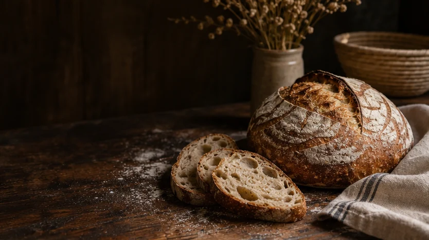

Country sourdough
Our signature loaf with a crackly crust and a soft, open crumb.

THE NEIGHBORHOOD BAKEHOUSE
Slow-fermented loaves, flaky pastries, and a little something warm for the walk home.
See our menuOur signature loaf with a crackly crust and a soft, open crumb.
Golden, flaky layers made with cultured butter.
A rotating bake inspired by whatever’s ripe this week.
Tuesday–Friday, 7 am–2 pm. Saturday and Sunday, 8 am–2 pm. The bread shelf is usually fullest in the morning.